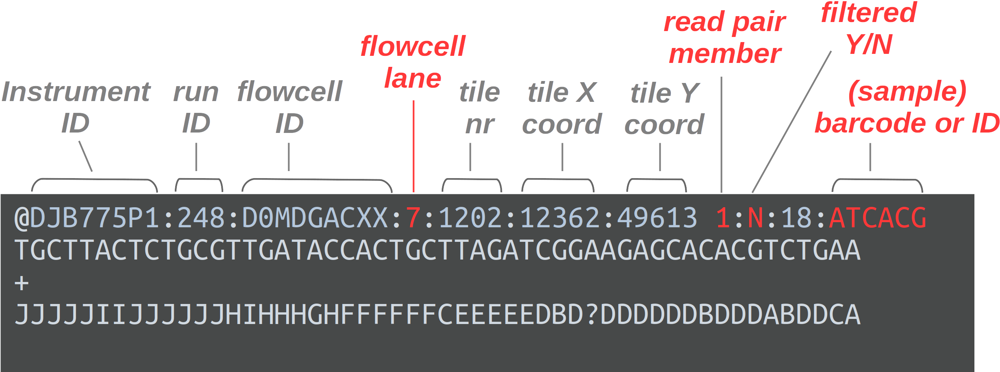

FASTQ files and running FastQC
Introduction
In this session, we will first talk about common genomics data files, with a focus on one type: FASTQ files. We will also learn how to run the FastQC program to perform FASTQ quality control.
While this continues our general introduction to command-line computing, the running of FastQC also doubles as the first step in the bacterial whole-genome analysis workflow that we will continue tomorrow.
Setting up
You should have an active VS Code session with an open terminal. In that terminal, you should be be in your dir /fs/scratch/PAS2250/cabana/$USER.
But we will now first move into the bact subdir:
# (Full path: /fs/scratch/PAS2250/cabana/$USER/bact)
cd bact1 Common sequence data file formats
We’ll talk about the following three types of genomic data file:
FASTQ: the format for high-throughput sequencing reads, with base quality scores.
FASTA: Files with just sequences and their IDs. For example, genome assemblies are in this format.
GTF & GFF: Tabular genome annotation formats, e.g. with the start & stop position of each gene.
SAM & BAM: A read alignment format.
1.1 The FASTQ format
FASTQ is a very common output format of high-throughput sequencing machines — at least from Illumina sequencing, you will almost always receive the sequences in this format. Like most genomic data files, these are plain text files, and each sequence that is read by the sequencer (i.e., each “read”) forms one FASTQ entry represented by four lines. The lines contain, respectively:
- A header that starts with
@and e.g. uniquely identifies the read - The sequence itself
- A
+(plus sign) - One-character quality scores for each base in the sequence

The header line is annotated, with some of the more useful components highlighted in red.
For viewing purposes, this read (at only 56 bp) is shorter than what is typical.
The “Q†in FASTQ stands for “quality”, to contrast this format with FASTA, a more basic and generic format that does not include base quality scores. FASTQ files have the extension .fastq or .fq, but they are very commonly gzip-compressed, in which case their name ends in .fastq.gz or .fq.gz.
The quality scores we saw in the read above represent an estimate of the error probability of the base call. Specifically, they correspond to a numeric “Phred†quality score (Q), which is a function of the estimated probability that a base call is erroneous (P):
Q = -10 * log10(P)
For some specific probabilities and their rough qualitative interpretations for Illumina data:
| Phred quality score | Error probability | Rough interpretation | ASCII character |
|---|---|---|---|
| 10 | 1 in 10 | terrible | + |
| 20 | 1 in 100 | bad | 5 |
| 30 | 1 in 1,000 | good | ? |
| 40 | 1 in 10,000 | excellent | ? |
This numeric quality score is represented in FASTQ files not by the number itself, but by a corresponding “ASCII character†(last column in the table). This allows for a single-character representation of each possible score — as a consequence, each quality score character can conveniently correspond to (& line up with) a base character in the read. (For your reference, here is a complete lookup table — look at the top table, “BASE=33”).
1.2 The FASTA format
FASTA files contain one or more DNA or amino acid sequences, with no limits on the number of sequences or the sequence lengths. FASTA is the standard format for, e.g.:
- Genome assembly sequences
- Transcriptomes and proteomes (all of an organism’s transcripts & amino acid sequences, respectively)
- Sequence downloads from NCBI such as a single gene/protein or other GenBank entry
The following example FASTA file contains two entries:
>unique_sequence_ID Optional description
ATTCATTAAAGCAGTTTATTGGCTTAATGTACATCAGTGAAATCATAAATGCTAAAAA
>unique_sequence_ID2
ATTCATTAAAGCAGTTTATTGGCTTAATGTACATCAGTGAAATCATAAATGCTAAATGEach entry consists of a header line and the sequence itself. Header lines start with a > (greater-than sign) and are otherwise “free form”, though the idea is that they provide an identifier for the sequence that follows.1
.fa, .fasta, .fna, .faa (Click to expand)
- “Generic†extensions are
.fastaand.fa(e.g:my_assembly.fasta) - Also used are extensions that explicitly indicate whether sequences are nucleotides (
.fna) or amino acids (.faa)
1.3 The GFF/GTF format
The GTF and GFF formats are very similar tab-delimited tabular files that contain genome annotations, with:
- One row for each annotated “genomic feature†(gene, exon, etc.)
- One column for each piece of information about a feature, like its genomic coordinates
See the sample below, with an added header line (not normally present) with column names:
seqname source feature start end score strand frame attributes
NC_000001 RefSeq gene 11874 14409 . + . gene_id "DDX11L1"; transcript_id ""; db_xref "GeneID:100287102"; db_xref "HGNC:HGNC:37102"; description "DEAD/H-box helicase 11 like 1 (pseudogene)"; gbkey "Gene"; gene "DDX11L1"; gene_biotype "transcribed_pseudogene"; pseudo "true";
NC_000001 RefSeq exon 11874 12227 . + . gene_id "DDX11L1"; transcript_id "NR_046018.2"; db_xref "GeneID:100287102"; gene "DDX11L1"; product "DEAD/H-box helicase 11 like 1 (pseudogene)"; pseudo "true"; Some details on the more important/interesting columns:
seqname— Name of the chromosome, scaffold, or contigfeature— Name of the feature type, e.g. “gene”, “exon”, “intron”, “CDS”start&end— Start & end position of the featurestrand— Whether the feature is on the+(forward) or-(reverse) strandattribute— A semicolon-separated list of tag-value pairs with additional information
1.4 The SAM/BAM format
The SAM/BAM format is a format for alignments, typically of reads from FASTQ files to a reference genome FASTA file.
- SAM (Sequence Alignment/Map) is an uncompressed text file
- BAM (Binary Alignment/Map) is its binary, compressed counterpart. BAM files are not human-readable but most software can work with them directly.
After a header with metadata, the main part of the file contains one line per alignment, with information such as to which contig/scaffold/chromosome and position the read mapped, and the full sequence of the original read is also included:
A01088:17:HHVG3DRXX:1:2238:4164:16877 163 SL4.0ch00 18287 255 12M725N139M = 19069 931 CTCAATTATATGGTGTAGACGCACAGTTCGGTGATCCTCCCGCCTAGGATATCTACTCTGCTGATTGGGAGAGCTCCACTGTTCCGGAGCCCAGTCATTTTGGTACATAACTTTTGTGTAGTCTTTTGCTCGTGTATGGGTATGGCGGGGC FFFFFFFF:FFFFFFFFFFFFFFFFFFFFFFFFFFFFFFFFFFFFFFFFF:FFFFFFFFFFFFF:F:FFFFFFFFFFFFFFFFFFFFFFFFFFFFFFFFFFFFFFFFFFFFFFFFFFFFFFFFFFFFFFFFFFFF:FFFFFFFF:FFFFFF NH:i:1 HI:i:1 AS:i:298 nM:i:0
A01088:17:HHVG3DRXX:1:2238:4164:16877 83 SL4.0ch00 19069 255 149M = 18287 -931 CTGCTGATTGGGAGAGCTCCACTGTTCCGGAGCCCAGTCATTTTGGTACATAACTTTTGTGTAGTCTTTTGCTCGTGTATGGGTATGGCGGGGCCCTGTCCCGTCGAGTTTCACTAATGTACTCTTAGAGGTCTGTGGACATTATGTGG FFFFFFFFFFFFFF:FFFFFFFFFFFFFFFFFFFFFFFFFFFFFFFFFFFFFFFFFFFFFFFFFFFFFFFFFFFFFFFFFFFFFFFFFFFFFFFFFFFFFFFFFFFFFFFFFFFFFFFFFFFFFFF:FFFFFFFFFFFFFFFFFFFFFF NH:i:1 HI:i:1 AS:i:298 nM:i:0
AA01088:17:HHVG3DRXX:1:2143:6876:32440 163 SL4.0ch00 19077 255 125M = 19077 125 TGGGAGAGCTCCACTGTTCCGGAGCCCAGTCATTTTGGTACATAACTTTTGTGTAGTCTTTTGCTCGTGTATGGGTATGGCGGGGCCCTGTCCCGTCGAGTTTCACTAATGTACTCTTAGAGGTC FFFFFFFFFFFFFFFFFFFFFFFFFFFFFFFFF,FFFFFFFFFFFF:FFFFFF:FF,FFF:FFFFFFFFFFFFFFFFFFFFFFFFFFFFFFFFFFFFFFFFFFFFFF:F:FFFFFF,FFFFFF:F NH:i:1 HI:i:1 AS:i:248 nM:i:0
AA01088:17:HHVG3DRXX:1:2143:6876:32440 83 SL4.0ch00 19077 255 125M = 19077 -125 TGGGAGAGCTCCACTGTTCCGGAGCCCAGTCATTTTGGTACATAACTTTTGTGTAGTCTTTTGCTCGTGTATGGGTATGGCGGGGCCCTGTCCCGTCGAGTTTCACTAATGTACTCTTAGAGGTC :FFFFFFFFFFFFFFF:FFFFFFFFFFFFFFFFFFFFF:FFFFFFFFFFFFFFFFFFFFFFFFFFFFFFFFFFFF,:FFFFFFFFFFFFF:FFFFFFFFFFFFFFFFFFFFFFFFFFFFFFFFFF NH:i:1 HI:i:1 AS:i:248 nM:i:0Click here for info on all SAM columns
| Col. nr. | Field | Description | Example |
|---|---|---|---|
| 1 | QNAME | Query (=aligned read) name | …. |
| 2 | FLAG | Bitwise flag | 99 |
| 3 | RNAME | Reference sequence name | chr1 |
| 4 | POS | Mapping position (leftmost) | 46317 |
| 5 | MAPQ | Mapping quality | 255 |
| 6 | CIGAR | CIGAR string | 150M |
| 7 | RNEXT | Name of read’s mate | = |
| 8 | PNEXT | Position of read’s mate | 46517 |
| 9 | TLEN | Template length | 450 |
| 10 | SEQ | Sequence of the read | AGTTACCGATCCT… |
| 11 | QUAL | Base quality of the read | FFFF@HHHHHHHH… |
| (optional) | TAG | Optional information | SM:i:37 |
2 Our FASTQ files
2.1 Listing your FASTQ files
First, let’s take another look at your list of FASTQ files:
ls -lh data/fastqtotal 6.1G
-rw-r--r-- 1 jelmer PAS2250 205M Feb 4 11:47 SM04_R1.fastq.gz
-rw-r--r-- 1 jelmer PAS2250 242M Feb 4 11:46 SM04_R2.fastq.gz
-rw-r--r-- 1 jelmer PAS2250 188M Feb 4 11:46 SM1030_R1.fastq.gz
-rw-r--r-- 1 jelmer PAS2250 221M Feb 4 11:46 SM1030_R2.fastq.gz
-rw-r--r-- 1 jelmer PAS2250 187M Feb 4 11:46 SM1031_R1.fastq.gz
-rw-r--r-- 1 jelmer PAS2250 221M Feb 4 11:46 SM1031_R2.fastq.gz
-rw-r--r-- 1 jelmer PAS2250 187M Feb 4 11:46 SM1038_R1.fastq.gz
-rw-r--r-- 1 jelmer PAS2250 224M Feb 4 11:46 SM1038_R2.fastq.gz
# [...output truncated...]In the file listing above:
The files all have a
.gzextension, indicating they have been compressed with the gzip utility.If you look closely at the file names, it looks like we have two FASTQ files per sample: one with
_R1at the end of the file name, and one with_R2.
What might each of the two files per sample represent/contain? (Click for the solution)
These contain the forward reads (_R1.fastq.gz) vs. the reverse reads (_R2.fastq.gz).
2.2 Paired-end data
In today’s and tomorrow’s labs, we’ll be working with Illumina sequencing data, which can be done in two “modes”: single-end (SE) and paired-end (PE).
With paired-end sequencing, each DNA fragment is sequenced from two ends in opposite directions (with the total size of the fragment –“insert sizeâ€â€“ determining whether these two reads will overlap). The resulting “paired†reads for each fragment are inextricably linked, with the first called the forward read and the second the reverse read.

In this example, the insert size is such that the forward and reverse reads do not overlap.
Most commonly for paired-end data, forward and reverse reads are placed in separate files, such that you’ll get two files for each sequenced sample:
- The file with forward reads has
_R1(or sometimes_1) in its name, e.g.SM04_R1.fastq.gz - The file with reverse reads has
_R2(or sometimes_2) in its name, e.g.SM04_R2.fastq.gz
(i.e., the file name should be identical to that for the forward read, except for the read direction identifier).
2.3 Viewing FASTQ files
Next, we’ll take a peak inside one of these FASTQ files.
Basic commands to view files
Let’s consider our options to look inside one of these files:
catprints the entire contents of a file to screen — probably not a good idea for such a large file.headandtailprint just the first and last lines of a file, respectively, which could perhaps be a good start?
Let’s try to print 8 lines, which should show us two reads:
head -n 8 data/fastq/SM04_R1.fastq.gz�
Խے�8�E��_1f�"�QD�J��D�fs{����Yk����d��*��
|��x���l޴�j�N������?������ٔ�bUs�Ng�Ǭ���i;_��������������|<�v����3��������|���ۧ��3ĐHyƕ�bIΟD�%����Sr#~��7���1y�Ai,4
w\]"b�#Q����8��+[e�3d�4H���̒�l�9LVMX��U*�M����_?���\["��7�s\<_���:�$���N��v�}^����sw�|�n;<�<�oP����
i��k��q�ְ(G�ϫ��L�^��=��<���K��j�_/�[ÛV�ns:��U��G�z�ݎ�j����&��~�F��٤ZN�'��r2z}�f\#��:�9$�����H�݂�"�@M����H�C�
�0�pp���1�O��I�H�P�.Ȣe��Q�>���
�'�;@D8���#��St�7k�g��|�A䉻���_���d�_c������a\�|�_�mn�]�9N������l�٢ZN�c�9u�����n��n�`��
"gͺ�
���H�?2@�FC�S$n���Ԓh� nԙj��望��f �?N@�CzUlT�&�h�Pt!�r|��9~)���e�A�77�h{��~�� ��
# [...output truncated...]Ouch! 😳 What went wrong here? (Click for the solution)
What happened here is that we are directly seeing the contents of the compressed file, which is simply not human-readable.
To get around this, we might be inclined to uncompress these files, which we could do with the gunzip command. However, uncompressed files take up several times as much disk storage space as compressed ones.
Fortunately, there are other approaches available. First, almost any bioinformatics tool will accept compressed FASTQ files. Also, the following commands and strategies should help you to do some basic exploration of your FASTQ files without uncompressing them.
The less pager
Here, we’ll use the less command, which will automatically display gzip-compressed files in human-readable form — let’s try it:
less -S data/fastq/SM04_R1.fastq.gzless -S (Click to expand)
Depending on your zoom level and the length of reads in your FASTQ file, some lines may contain too many characters to fit on your screen. If that’s the case, less will by default “wrap†those lines onto the next line on your screen, so characters won’t run off the screen on the right-hand side.
That may be useful when the file contains text you’re trying to read in full, but it is often confusing for files like FASTQ as well as for tabular files. That’s why we turned off line-wrapping with the -S option.
Exercise: Explore the file with less
less doesn’t print stuff to screen but instead opens it in a “pager”. After running the command above, you should be viewing the file inside the less pager.
You can move around in the file in several ways: by scrolling with your mouse, with up and down arrows, or, if you have them, PgUp and PgDn keys (also, u will move up half a page and d down half a page).
If you find yourself scrolling down and down to try and reach the end of the file, you can instead press G to go to the very end right away (and g to go back to the top).
Notice you won’t get your shell prompt back until you press q to quit less.
Exercise : The number of reads in a FASTQ file
- Given the output of the command above, how many reads are in this FASTQ file?
Solution
There are 4,124,516 / 4 = 1,031,129 reads in this file, so a little more than a million.
- What line count do you get when you run
wc -ldirectly on the compressed file?
Solution
You’ll get a line count of 880,721, quite a ways off from the number of lines in the uncompressed file! So, don’t do this when you want to count lines/reads!
wc -l data/fastq/SM04_R1.fastq.gz 880721 data/fastq/SM04_R1.fastq.gz3 Running FastQC
3.1 Intro to FastQC
FastQC is a ubiquitous tools for quality control of FASTQ files. Running FastQC or a similar program is the first step in nearly any high-throughput sequencing project. FastQC is also a good first example of a tool with a command-line interface.
For each FASTQ file, FastQC outputs an HTML file that you can open in your browser with about a dozen graphs showing different QC metrics. The most important one is the per-base quality score graph shown below.


3.2 Building our FastQC command
To run FastQC, we can use the command fastqc.
If you want to analyze one of your FASTQ files with default FastQC settings, a complete FastQC command to do so would simply be fastqc followed by the name of the file:
# (Don't run this)
fastqc data/fastq/SM04_R1.fastq.gzHowever, an annoying FastQC default behavior is that it writes its output files in the dir where the input files are — in general, it’s not great practice to directly mix your primary data and results like that!
To figure out how we can change that behavior, first consider that many commands and bioinformatics tools alike have an option -h and/or --help to print usage information to the screen.
Exercise: FastQC help and output dir
Print FastQC’s help info, and figure out which option you can use to specify a custom output directory.
Click for the solution
fastqc -h and fastqc --help will both work to show the help info.
You’ll get quite a bit of output printed to screen, including the snippet about output directories that is reproduced below:
fastqc -h -o --outdir Create all output files in the specified output directory.
Please note that this directory must exist as the program
will not create it. If this option is not set then the
output file for each sequence file is created in the same
directory as the sequence file which was processed.So, you can use -o or equivalently, --outdir to specify an output dir.
So, our final FastQC command will be:
fastqc \
--outdir results/fastqc_pretrim \
data/fastq/SM04_R1.fastq.gz\
Above, I spread the command across multiple lines, which makes it a little easier to read. You can run the command exactly like that: we use the backslashes (\) at the end of all but the last line to indicate to the shell that our command will continue on the next line.
3.3 Running our FastQC command
Now, let’s try to run that command:
fastqc \
--outdir results/fastqc_pretrim \
data/fastq/SM04_R1.fastq.gzbash: fastqc: command not found...However, there is a wrinkle, as you can see above. While FastQC is installed at OSC2, we have to “load it†with the module load command before we can use it.
However, we will be using a whole array of bioinformatics programs, and we are going to use a (nearly) one-stop solution: a so-called “Conda environment†that has all of those programs installed.
We won’t have time to get into this now, but you want to learn more about Conda / software usage at supercomputers, see this reference page elsewhere on the website.
Here’s how we can load that Conda software environment — we first load OSC’s (mini)conda installation, and then we can load (“activate”) the Conda environment that I created for you:
module load miniconda3
source activate /fs/ess/PAS0471/jelmer/conda/cabanaNow, let’s try again:
fastqc \
--outdir results/fastqc_pretrim \
data/fastq/SM04_R1.fastq.gzSpecified output directory 'results/fastqc_pretrim' does not existExercise: Fixing the FastQC error
Now what is going on this time? 😨 Or had you perhaps seen this coming given the help text we saw earlier? At any rate, can you try to fix the problem?
Click here for a hint
You’ll need to create a new directory, which you can do either by using the buttons in the VS Code side bar, or with the mkdir command — here, try it as mkdir -p followed by the name (path) of the directory you want to create.
Click here for the solution
The problem, as the error fairly clearly indicates, is that the output directory that we specified with
--outdirdoes not currently exist. We might have expected FastQC to be smart/flexible enough to create this dir for us (many bioinformatics tools are), but alas. On the other hand, if we had read the help text clearly, it did warn us about this.With the
mkdircommand, to create “two levels†of dirs at once, like we need to here (bothresultsand thenfastqcwithin there), we need its-poption:
mkdir -p results/fastqc_pretrimAnd for our final try before we give up and throw our laptop out of the window (make sure to run the code in the exercise solution before you retry!):
fastqc \
--outdir results/fastqc_pretrim \
data/fastq/SM04_R1.fastq.gzapplication/gzip
Started analysis of SM04_R1.fastq.gz
Approx 5% complete for SM04_R1.fastq.gz
Approx 10% complete for SM04_R1.fastq.gz
Approx 15% complete for SM04_R1.fastq.gz
[...truncated...]
Analysis complete for SM04_R1.fastq.gzSuccess!! 🎉
3.4 FastQC output files
Let’s take a look at the files in the output dir we specified:
ls -lh results/fastqc_pretrimtotal 1.2M
-rw-r--r-- 1 jelmer PAS0471 713K Feb 4 14:02 SM04_R1_fastqc.html
-rw-r--r-- 1 jelmer PAS0471 431K Feb 4 14:02 SM04_R1_fastqc.zip- There is a
.zipfile, which contains tables with FastQC’s data summaries - There is an
.html(HTML) file, which contains plots — this is what we’ll look at next
Exercise: A script & another FastQC run
A) We should always save all the code we run as part of our analysis pipeline, i.e. whatever is needed for all steps to be repeated later (or if possible, by someone else).
Therefore, create a new file by clicking => File => New Text File. Then, save the file straight away => File => Save as workflow/workflow.sh.
Then, copy the following code into the script:
# Load the Conda environment
module load miniconda3
source activate /fs/ess/PAS0471/jelmer/conda/cabana
# Run FastQC
mkdir -p results/fastqc_pretrim
fastqc \
--outdir results/fastqc_pretrim \
data/fastq/SM04_R1.fastq.gzB) Run FastQC for the corresponding R2 FASTQ file. Would you use the same output dir?
Click for the solution
Yes, it makes sense to use the same output dir, since as you could see above, the output file names have the input file identifiers in them. As such, we don’t need to worry about overwriting files, and it will be easier to have all the results in a single dir.
To run FastQC for the R2 (reverse-read) file:
fastqc \
--outdir results/fastqc_pretrim \
data/fastq/SM04_R2.fastq.gzStarted analysis of SM04_R2.fastq.gz
Approx 5% complete for SM04_R2.fastq.gz
Approx 10% complete for SM04_R2.fastq.gz
Approx 15% complete for SM04_R2.fastq.gz
[...truncated...]
Analysis complete for SM04_2.fastq.gzls -lh results/fastqc_pretrim-rw-r--r-- 1 jelmer PAS0471 241K Jan 21 21:50 SM04_R1_fastqc.html
-rw-r--r-- 1 jelmer PAS0471 256K Jan 21 21:50 SM04_R1_fastqc.zip
-rw-r--r-- 1 jelmer PAS0471 234K Jan 21 21:53 SM04_R2_fastqc.html
-rw-r--r-- 1 jelmer PAS0471 244K Jan 21 21:53 SM04_R2_fastqc.zipNow, we have four files: two for each of our preceding successful FastQC runs.
Footnotes
Note that because individual sequence entries are commonly spread across multiple lines, FASTA entries do not necessarily cover 2 lines (cf. FASTQ).↩︎
For a full list of installed software at OSC: https://www.osc.edu/resources/available_software/software_list↩︎